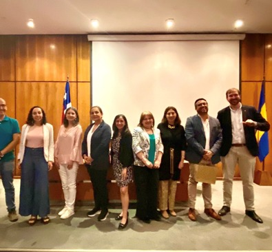

5
Portfolio Entries
4 projects and 1 doctoral scholarship
Research projects and doctoral funding in public health, healthy ageing, reproductive health and health innovation.

4 projects and 1 doctoral scholarship

Research and prototype development

In progress

Includes the doctoral scholarship

Identifying sarcopenia and frailty earlier in Universidad Diego Portales workers aged 35 to 59.
Explore four research projects and one doctoral scholarship. Status notes distinguish confirmed dates from inferred progress.

Proyecto de investigación
Reference: Fondo Académicas UDP 2025; código no informado
Principal investigator / responsible researcher: Fanny Petermann-Rocha
Fanny’s role: Investigadora responsable
Collaborators / supervisors: Estudiantes de medicina capacitados; equipo completo no enumerado en el consentimiento
Funded by: Universidad Diego Portales — Vicerrectoría de Investigación e Innovación (VRII), Fondo Académicas UDP 2025
Estudio de sarcopenia, fragilidad y factores asociados en trabajadores de la UDP de 35 a 59 años. Combina mediciones de fuerza, marcha y antropometría con preguntas sobre estilo de vida para aportar evidencia a la detección temprana y prevención.

Desarrollo de prototipo
Reference: Desarrollo de Prototipos GENCI UDP; código no informado
Principal investigator / responsible researcher: Fanny Petermann-Rocha (académica adjudicataria)
Fanny’s role: Adjudicataria y desarrolladora junto a Alonso Pizarro
Collaborators / supervisors: Alonso Pizarro — Escuela de Obras Civiles UDP
Funded by: Universidad Diego Portales — Desarrollo de Prototipos Género y Ciencia (GENCI)
Desarrollo y validación de SCANNER, una herramienta de evaluación antropométrica a distancia mediante imágenes. El apoyo descrito por UDP busca avanzar desde pruebas con figuras 3D hacia la validación en personas, facilitando mediciones para quienes no pueden acudir a centros de salud.

Proyecto de investigación
Reference: The Borrow Foundation; código de adjudicación no informado
Principal investigator / responsible researcher: Andrés O. Celis (Chile); Alex D. McMahon (Glasgow)
Fanny’s role: Integrante del equipo investigador
Collaborators / supervisors: David I. Conway; colaboración de University of Glasgow, Universidad de Chile y Universidad Diego Portales
Funded by: The Borrow Foundation
Evaluación del programa chileno de leche fluorada y su relación con la caries en niños y adolescentes rurales. Analiza registros de salud bucal, tendencias en escolares de 12 años y desigualdades socioeconómicas; compara el programa con otras estrategias de fluoración para orientar políticas públicas.

Proyecto de investigación
Reference: Fondo Asociativo UDP 2022; código no informado
Principal investigator / responsible researcher: Heidy Kaune Galaz (responsable identificada en fuentes UDP)
Fanny’s role: Investigadora colaboradora
Collaborators / supervisors: Fernando Zegers; Florencia Herrera; Martina Yopo
Funded by: Universidad Diego Portales — Fondo Asociativo UDP
Estudio piloto de las intenciones reproductivas y la disposición a preservar la fertilidad mediante criopreservación de óvulos. Encuestó a 1.020 estudiantes de la UDP para conocer sus planes de maternidad, condiciones para tener hijos y barreras percibidas de acceso a la preservación de la fecundidad.

Beca doctoral / formación en investigación
Reference: ANID–Becas Chile 2018–72190067
Principal investigator / responsible researcher: No aplica como IP de proyecto; Fanny Petermann-Rocha, autora de la tesis y becaria
Fanny’s role: Becaria e investigadora doctoral
Collaborators / supervisors: Supervisores: Jill P. Pell; Carlos Celis-Morales; Frederick K. Ho
Funded by: ANID — Gobierno de Chile, Becas Chile
Financiamiento doctoral en la University of Glasgow. La tesis estudió las asociaciones de capacidad física, sarcopenia y fragilidad con desenlaces adversos de salud en adultos de mediana edad y mayores, utilizando datos de UK Biobank.